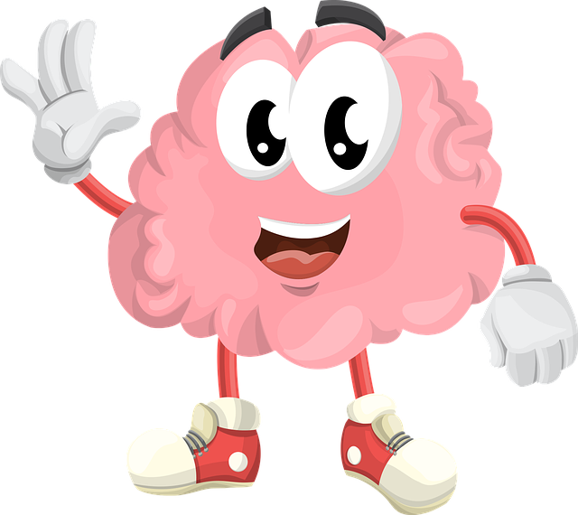

Situaciones de aprendizaje LOMLOE
Las situaciones de aprendizaje son actividades de clase que se realizan en momentos concretos con un fin claro: aplicar y desarrollar las competencias clave y específicas. Es un nuevo concepto que aparece con la LOMLOE y que viene a sustituir o completar a las unidades didácticas. Veamos qué son las situaciones de aprendizaje y cómo diseñarlas para lograr un aprendizaje significativo.
Qué es una situación de aprendizaje según la LOMLOE
De acuerdo a los currículos LOMLOE, las situaciones de aprendizaje son:
situaciones y actividades que implican el despliegue por parte del alumnado de actuaciones asociadas a competencias clave y competencias específicas y que contribuyen a la adquisición y desarrollo de las mismas.
Real Decreto 95/2022, Real Decreto 157/2022, Real Decreto 217/2022 y Real Decreto 243/2022.
Esto quiere decir que las situaciones de aprendizaje no son actividades simples y aisladas, sino una situación en la que ponemos al alumnos y debe «exprimirse» para resolverla. Al hacerlo, pondrá en práctica el nivel competencial que ya tiene y, a su vez, desarrollará esas competencias en un nivel más complejo.
¿Qué dice el currículo sobra las situaciones de aprendizaje?
El currículo nacional, en su Anexo III expone lo siguiente:
La adquisición y el desarrollo de las competencias clave, que se describen en el apartado correspondiente y se concretan en las competencias específicas de cada materia, se verán favorecidos por metodologías que reconozcan al alumnado como agente de su propio aprendizaje. Para ello es imprescindible la implementación de propuestas pedagógicas que, partiendo de los centros de interés de los alumnos y alumnas y aumentándolos, les permitan construir el conocimiento con autonomía, iniciativa y creatividad desde sus propios aprendizajes y experiencias. Las situaciones de aprendizaje representan una herramienta eficaz para integrar los elementos curriculares de las distintas materias mediante tareas y actividades significativas y relevantes para resolver problemas de manera creativa y cooperativa, reforzando la autoestima, la autonomía, la iniciativa, la reflexión crítica y la responsabilidad.
Para que la adquisición de las competencias sea efectiva, dichas situaciones deben estar bien contextualizadas y ser respetuosas con las experiencias del alumnado y sus diferentes formas de comprender la realidad. Asimismo, deben estar compuestas por tareas complejas cuya resolución conlleve la construcción de nuevos aprendizajes y los prepare para su futuro personal, académico y profesional. Con estas situaciones se busca ofrecer al alumnado la oportunidad de conectar y aplicar lo aprendido en contextos de la vida real. Así planteadas, las situaciones constituyen un componente que, alineado con los principios del Diseño universal para el aprendizaje, permite aprender a aprender y sentar las bases para el aprendizaje a lo largo de la vida, fomentando procesos pedagógicos flexibles y accesibles que se ajusten a las necesidades, las características y los diferentes ritmos de aprendizaje del alumnado y que favorezcan su autonomía.
El diseño de estas situaciones debe suponer la transferencia de los aprendizajes adquiridos por parte del alumnado, posibilitando la articulación coherente y eficaz de los distintos conocimientos, destrezas y actitudes propios de esta etapa. Las situaciones deben partir del planteamiento de unos objetivos claros y precisos que integren diversos saberes básicos. Además, deben proponer tareas o actividades que favorezcan diferentes tipos de agrupamientos, desde el trabajo individual al trabajo en grupos, permitiendo que el alumnado asuma responsabilidades personales de manera autónoma y actúe de forma cooperativa en la resolución creativa del reto planteado. Su puesta en práctica debe implicar la producción y la interacción verbal e incluir el uso de recursos auténticos en distintos soportes y formatos, tanto analógicos como digitales. Las situaciones de aprendizaje deben fomentar aspectos relacionados con el interés común, la sostenibilidad o la convivencia democrática, esenciales para que el alumnado sea capaz de responder con eficacia a los retos del siglo XXI.
Real Decreto 217/2022, de 29 de marzo, por el que se establece la ordenación y las enseñanzas mínimas de la Educación Secundaria Obligatoria
Cómo hacer una situación de aprendizaje (LOMLOE) en 5 pasos
Aunque ahora mismo estemos muy perdidas/os, lo cierto es que la legislación siempre nos da algunas pistas. En este caso, podemos acudir al Anexo III del RD que establece el currículo de cualquiera de los niveles educativos. Ahí nos van a explicar qué aspectos metodológicos deben incluir nuestras situaciones de aprendizaje. Establezcamos esto como punto de partida.
Cómo diseñar situaciones de aprendizaje eficaces
Teniendo en cuenta todo lo anterior, si quieres diseñar situaciones de aprendizaje que logren un aprendizaje significativo, debes seguir estos pasos:
- Establece objetivos claros y precisos.
- Integra diversos saberes básicos.
- Plantea escenarios que requieran diferentes tipos de agrupamientos (individual y en grupos).
- Moviliza responsabilidades personales y colectivas.
- Aplica la comunicación oral.
- Utiliza distintos recursos, tanto analógicos como digitales.
- Define temas relacionados con el interés común, la sostenibilidad o la convivencia democrática.
- Haz un planteamiento adecuado al nivel educativo.
Situaciones de aprendizaje (explicación fácil)
El planteamiento de situación de aprendizaje por parte de la LOMLOE ha sido tan filosófico que aún nadie tiene claro qué demonios es una situación de aprendizaje, así que intentemos arrojar algo de luz.
Una situación de aprendizaje es un conjunto de actividades. Hasta aquí bien. ¿Qué pasa? Que no vale con abrir el libro de texto, leer la página 23 y hacer los ejercicios del 1 al 5. ¿Por qué esto no vale? Porque son tareas clásicas, rutinarias y que resuelven tareas muy pequeñas.
Una situación de aprendizaje pone un reto al alumno, para que lo resuelva aplicando sus destrezas. ¿Qué destrezas? Las competencias. ahora bien, aquí sí tenemos que entrar en matices…
Elementos de una situación de aprendizaje
- 🔑 Competencias: Imagina que te dispones a aprender a cocinar. Puede que nunca hayas tocado una sartén o que tengas cierta experiencia, o que no hayas cocinado nunca pero sí hayas visto a otros cocinar. ¿Cuál es tu punto de partida? Esa será tu competencia inicial. Imaginemos que no hemos cocinado nunca y no tentemos ni idea de absolutamente nada. El nivel competencial que tenemos ahora mismo es 0, no sabemos nada de cocina. Para aprender, nos acompañará un chef que nos enseñe a cocinar desde cero.
- 🎯 Objetivos: ahora que tenemos nuestro punto inicial, podemos establecer unas metas realistas (ya que tampoco queremos frustrarnos). Nuestros primeros objetivos serán 1) utilizar los recurso básicos de la cocina, como la sartén y la cazuela, y 2) practicar la plancha y la cocción. Para nuestro nivel competencial está bien de momento.
- 🧠 Saberes básicos: para poder actuar, siempre necesitamos ciertos conocimientos, como qué es una sartén y un cazo, cómo agarrarlos para no quemarnos, cómo funciona el fuego, etc. Son nociones básicas que nos ayudan a orientarnos después en la acción. Estos conocimientos nos los enseña el chef de una manera didáctica, para que los entendamos en profundidad en poco tiempo, sin tener que pararnos a memorizar listas eternas y dormirnos delante de los apuntes. ¿Quién iría a un taller de cocina para estudiar un libro?
- 👍 Actividades: cuando sabemos dónde estamos y a dónde vamos, podemos empezar a caminar. Las actividades son las acciones que llevamos a cabo, guiados por el chef, para aprender a cocinar lo que hemos establecido en este primer taller. Acciones como encender el fuego, elegir la sartén adecuada o retirar a tiempo la pasta de la cocción son ejemplos de actividades competenciales, porque requieren destrezas. Leer en un libro cómo cocer no es competencial, porque no nos moviliza, tenemos un rol pasivo y no aprendemos nada. Mirar cómo el chef cocina tampoco nos enseña nada, porque nos falta la experiencia. Entonces, la forma de avanzar es experimentar con nuestras competencias. De esta forma, vamos ampliando esas mismas competencias. Es decir, cuanta más pasta cuezo, más le pillo el truco. Cuantas más veces enciendo y apago el fuego, menos veces me confundo al darle a los botones. Es proceso continuo, como una rueda o una bola de nieve, que en cada vuelta se hace más grande. Trabajo constantemente sobre las mismas competencias, ampliándolas cada vez más.
- 🖍 Criterios de evaluación: el sentido que tiene este taller de cocina es aprender a cocinar, así que necesitamos saber si después de las actividades hemos aprendido realmente algo. ¿Cómo lo sabemos? Poniéndonos a prueba con unos medidores efectivos, vinculados con nuestro punto de partida (objetivos): ¿utilizo los recurso básicos de la cocina como la sartén y la cazuela? ¿He practicado la plancha y la cocción? Aquí la respuesta puede ser sí/no o puede tener más niveles, que es lo óptimo. Podemos establecer una escala de 5 estrellas con la que el chef valore en qué medida sabemos usar la sartén, la cazuela y cocinar a la plancha y las cocciones. Con esto objetemos una valoración objetiva de nuestro aprendizaje, gracias al trabajo paulatino y la observación del chef.
Ahora sabemos algo de cocina, aunque sea poco. Podemos adentrarnos en un segundo taller para seguir mejorando nuestra competencia e incluso podemos experimentar con talleres más complejos. Las situaciones de aprendizaje son algo abierto que puedes diseñar como quieras siempre que hagas actividades competenciales que supongan un reto complejo pero alcanzable para los alumnos.

Mis 10 consejos para preparar la programación
Creo una situación de aprendizaje LOMOE con ChatGPT
Cómo se articula la situación de aprendizaje con los demás componentes
La situación de aprendizaje es la olla donde echas todos los ingredientes para cocinarlos y obtener la receta final. Debes entenderla como un contenedor más que como un elemento curricular. Una situación de aprendizaje es eso, una situación, no es un objetivo o un contenido. Es un contexto que creamos para fomentar el aprendizaje. Y en ese contexto metemos los elementos curriculares: unos objetivos que guíen el camino, unas competencias en las que apoyarnos y que desarrollar (recuerda la bola de nieve), unos saberes básicos que nos den las nociones necesarias y unas actividades para resolver el problema propuesto. Finalmente, nos enfrentamos a la prueba, donde medimos el grado de cumplimiento de cada criterio de evaluación.
¿Qué apartados tiene una situación de aprendizaje?
La LOMLOE tiene una peculiaridad y es que se ha hecho bastante abierta para que las comunidades autónomas y los centres completen el currículo. Esto nos da flexibilidad pero también confusión, así que ¿cuáles son los componentes de una situación de aprendizaje? Algunas comunidades autónomas nos dan una plantilla:
Extremadura
Extremadura proporciona un modelo de situación de aprendizaje con los siguientes apartados:
- Presentación
- Situación de aprendizaje
- Título
- Etapa
- Curso
- Materia(s)
- Temporalización
- Producto final o evidencias
- Punto de partida. Centro de interés
- Justificación/descripción
- Relación con el resto de elementos
- Competencias específicas
- Criterios de evaluación
- Saberes básicos
- Interdisciplinariedad
- Producto final o evidencias
- Actividades y recursos
- De conocimiento e introducción
- De motivación
- De desarrollo
- De evaluación
- De análisis y reconducción
- Otras
- Organización del aula/metodología
- Agrupamientos
- Espacios
- Tiempos
- Papel docente y otros participantes
- Metacognición
- Materiales
- Evaluación formativa
- Temporalización
- Evaluadores
- Sistemas de seguimiento y mejora
- Indicadores de logro
Aragón
Aragón incluye en el propio currículo (ORDEN ECD/1172/2022, de 2 de agosto, por la que se aprueban el currículo y las características de la evaluación de la Educación Secundaria Obligatoria y se autoriza su aplicación en los centros docentes de la Comunidad Autónoma de Aragón) orientaciones para el diseño de situaciones de aprendizaje de cada una de las materias. Puedes verlo en el Anexo II, en el apartado correspondiente a tu materia, en el punto IV.3. Diseño de situaciones de aprendizaje. Por ejemplo, para Artes escénicas nos dicen que las situaciones de aprendizaje detallarán:
- Qué tiene que hacer el alumnado
- Qué va a aprender
- Para qué lo va a aprender
- Y cómo lo va a aprender
- Los procedimientos e instrumentos evaluadores
- Estará referida a uno o varios criterios de evaluación
- Y asociada a varias competencias específicas de la materia
De acuerdo con el ejemplo que nos dan en el currículo, una situación de aprendizaje en Aragón tendrá los siguientes apartados:
- Introducción y contextualización
- Objetivos didácticos y elementos curriculares involucrados
- Conexiones con otras materias
- Descripción de la actividad
- Metodología y estrategias didácticas
- Atención a las diferencias individuales
- Recomendaciones para la evaluación formativa
Comunidad Valenciana
En la Comunidad Valenciana se establecen unas orientaciones para el diseño de situaciones de aprendizaje en cada una de las materias, al igual que hacía Aragón. Sin embargo, no nos ofrecen ejemplos de situaciones desarrolladas, sino ideas más generales.
Por ejemplo, para Biología y Geología en ESO, se establecen unos criterios de diseño para cada situación de aprendizaje (DECRETO 107/2022, de 5 de agosto, del Consell, por el que se establece la ordenación y el currículo de Educación Secundaria Obligatoria):
- Plantearán un problema, reto o situación en el que la demanda sea clara y explícita.
- Contribuirán al desarrollo de una o varias competencias específicas.
- Integrarán saberes básicos.
- Se adecuarán a la edad y al nivel de desarrollo cognitivo del alumnado.
- Serán significativas, relevantes y estimulantes porque tratan temas de su interés o bien porque el enfoque propuesto es atractivo.
- Requerirán un enfoque crítico y reflexivo porque la situación planteada puede incluir una demanda de posicionamiento una vez resuelta la situación.
- Favorecerán la cooperación y el trabajo en equipo desarrollando las competencias socioemocionales.
- Conllevarán la resolución creativa de una pregunta o problema al ser las situaciones planteadas suficientemente abiertas para que no tengan una única respuesta o solución.
- Implicarán la comunicación y representación de estrategias, procesos y soluciones y la
- evaluación pondrá énfasis tanto en el proceso como las soluciones finales.
- Abordarán temas de interés público.
- Movilizarán saberes científicos y de otras materias del currículo estableciendo conexiones entre ellos y las experiencias adquiridas por el alumnado en diferentes contextos.
Cómo evaluar las situaciones de aprendizaje
Seguro que este proceso te suena: en esencia es una unidad didáctica. Todas las vueltas vienen porque se busca el enfoque competencial, pero la mayoría de profesores ya integraban ese enfoque competencial en sus unidades antes de la llegada de la LOMLOE, así que nadie ha reinventado la rueda todavía.
Sí que es cierto que se le ha añadido «narrativa». Para buscar esa integración, la situación de aprendizaje parte de un centro de interés (un tema) que plantea un reto inicial y un resultado esperado. Puedes meterle más o menos creatividad, puedes hacer la situación más o menos larga y compleja, y trabajarla durante una semana o 3 meses. Para tus clases puedes ser más flexible; para oposiciones, asegúrate de cumplir con lo que pide la convocatoria. En cualquier caso, busca planteamientos atractivos, en los que pongas al alumno en el centro.
Para evaluar las situaciones de aprendizaje, necesitamos usar como referentes los criterios de evaluación. Estos vienen relacionados en el currículo con las competencias específicas. Es decir, cada competencia específica (CEsp) tiene asociados varios criterios de evaluación (CEv). Midiendo el grado de consecución de los CEv de una Cesp conseguimos saber en qué medida cada alumno/a ha desarrollado esa competencia específica.
Para ello, necesitamos darle pesos tanto a las competencias como a los criterios. Y aquí viene el lío :/. Cada comunidad autónoma va a decir algo distinto, así que asegúrate de leer bien la documentación de tu comunidad. Puede ser que nos pidan que:
- Todas las competencias específicas valen lo mismo y todos los criterios dentro de cada competencia valen lo mismo
- Las competencias valen lo mismo pero los criterios no
- Ni los criterios ni las competencias valen lo mismo
¿Qué tenemos que hacer en cada caso?
- Si valen lo mismo, hacemos media aritmética.
- Si no valen lo mismo, hacemos media ponderada. Para ello, tenemos que decidir qué porcentaje le damos a cada competencia (en su caso) y a cada criterio de evaluación.
Veámoslo en la práctica:
Características de las situaciones de aprendizaje LOMLOE
Si nos vamos al anexo III del currículo, encontramos un apartado dedicado a las situaciones de aprendizaje, donde nos hablan un poco más de ellas. De ahí podemos extraer sus características:
Enfoque constructivista
Para diseñas situaciones de aprendizaje, necesitamos partir de un planteamiento pedagógico donde el alumno sea el centro y construya su propio aprendizaje (con la guía del profesor). Para que tomen un rol activo, necesitamos motivarles y una forma de hacerlo es tener en cuenta sus intereses. De esta manera, ellos toman la iniciativa y aprenden de manera autónoma y creativa resolviendo los problemas que les planteemos. Y lo más importante: lo hacen aplicando aprendizajes que ya tienen fruto de la experiencia mientras adquieren nuevos aprendizajes a base de experiencia.
Quizás te resulte un poco confuso al principio el hecho de que haya que aplicar y desarrollar competencias a la vez y de que apliquen y adquieran experiencia al mismo tiempo, pero piénsalo de esta forma:
Cuando aprendes a montar en bici, al principio no sabes nada. Cuando te montas, te explican que debes dar pedales e ir recto. Para guiarte y apoyarte, llevas ruedines y alguien te sujeta la bici. En ese punto, ya tienes una primera experiencia y un nivel muy básico de competencia para montar en bici. La segunda vez que montas, ya tienes la experiencia del primer día, pero adquieres una nueva y cada vez se te da mejor montar en bici. Así, poco a poco, vas retirando apoyos hasta que llega un punto en que eres totalmente independiente. Es el punto en el que tienes una competencia absoluta, pero lo has logrado sumando experiencias antiguas a otras nuevas. Con el aprendizaje en clase es igual.

Aprendizaje significativo
Nunca debemos olvidarnos de este concepto clave y fundamental para cualquier proceso de enseñanza-aprendizaje. Lo que los alumnos aprendan debe modificar sus esquemas cognitivos y permanecer en el tiempo. Memorizar una lista de fechas no es aprendizaje significativo. Entender el contexto histórico de diferentes épocas sí lo es.
Las situaciones de aprendizaje nos permiten interrelacionar los elementos curriculares en actividades o tareas conectadas con la realidad, por lo que se favorece la transferencia de los aprendizajes, es decir, lo que el alumno aprenda en clase podrá aplicarlo a la vida real fuera del centro.
Además, estas actividades deben plantear problemas que se resuelvan de forma «creativa y cooperativa, reforzando la autoestima, la autonomía, la reflexión y la responsabilidad» (Anexo III del Proyecto de real decreto por el que se establece la ordenación y las enseñanzas mínimas de la Educación Primaria, 2021).
No hay una única verdad
Y esto es importante destacarlo porque a veces se olvida. Las situaciones de aprendizaje deben estar bien contextualizadas y respetar las distintas formas de ver el mundo, de comprender la realidad, de trabajar y de aprender. Nunca habrá un único camino ni una única respuesta para resolver una situación de aprendizaje. Si la hubiese, mataríamos la creatividad y la autonomía. Resulta obvio, pues, que las situaciones de aprendizaje conectan con el Diseño Universal de Aprendizaje (DUA).

Aprendizaje durante toda la vida
Gracias a esa autonomía, a la adquisición de competencias, a la experiencia y a la conexión con la realidad, se favorece la transferencia de aprendizajes y, por tanto, también el aprendizaje a lo largo de toda la vida. Si el alumno es capaz de resolver por sí mismo problemas de manera guiada y cada vez es más independiente, llegará un punto en que podrá dar pedales solo, es decir, podrá resolver los problemas que le surjan en el día a día aplicando las competencias que ya tiene adquiridas. Y, en el caso de que no sepa algo, podrá aprender aquello que necesite en cada momento.
¿Situaciones de aprendizaje o unidades didácticas?
Aunque en la legislación no hay nada sobre esto, parece que las situaciones de aprendizaje vienen a sustituir a las unidades didácticas. ¿Qué diferencia hay entre una unidad didáctica y una situación de aprendizaje? Si ya estabas haciendo las unidades como explicamos en Vírgula, poniendo el foco en el desarrollo competencia, no cambia nada más allá de los nuevos términos LOMLOE. Sin embargo, si tus unidades eran más «clásicas», sí que cambian bastantes cosas. En resumen, una situación de aprendizaje:
- Propone una situación en la que el alumno debe resolver un problema bastante amplio como para que no haya una única solución.
- Esa situación (o centro de interés) es cercana/o al alumnado, por lo que despierta su interés y activa la motivación
- Debe apoyarse en los saberes básicos para poder poner en práctica las competencias
- A la vez, desarrolla las competencias (específicas y clave)
- Implica actividades, recursos e instrumentos de evaluación variados
- Se diseña teniendo en cuenta el DUA (Diseño Universal del Aprendizaje)
- Aplica metodologías activas y colaborativas
¿Tus unidades ya contemplaban todos estos puntos? Si la respuesta es sí, ¡enhorabuena!, puedes seguir trabajando igual. Si tu respuesta es no, debes adaptarte a este nuevo modelo. Aunque lo más probable es que tu respuesta sea sí en parte. Este nuevo enfoque trae novedades, como el DUA, metodologías más activas y mayor narrativa. Seguro que podemos exprimirnos un pelín más para diseñar situaciones de aprendizaje con las que los alumnos desarrollen las competencias. Porque recuerda: perseguimos el desarrollo de competencias, no dar unos contenidos, no poner una nota,… sino desarrollar las competencias, ese es el foco.
¿Qué pasa si me piden situaciones de aprendizaje dentro de la unidad?
En el caso de que te pidan incluir alguna situación de aprendizaje dentro de la unidad, de cara a las oposiciones, vamos a hacer lo siguiente:
- Primero: entiéndelo como una mini unidad dentro de tu unidad
- Propón una situación contextualizada, un reto, un problema que tus alumnos deban resolver. Debe ser complejo pero realizable, así que adáptalo a tu grupo de alumnos y a su nivel madurativo. Busca motivarles y despertar su interés, por ejemplo, a través de la curiosidad.
- Aplica metodologías activas que empujen al alumno a la acción. Utiliza también el Diseño Universal del Aprendizaje.
- Selecciona unos contenidos curriculares para trabajar en la situación de aprendizaje: unas competencias clave y específicas, unos saberes básicos y los criterios con los que vas a evaluar las competencias.
- Diseña actividades que se apoyen en la base de esos saberes básicos para desarrollar las competencias.
- Diseña actividades de evaluación. No tienes por qué evaluar todas las actividades, solo aquellas que tú consideres. En ellas vas a aplicar los criterios de evaluación, con su correspondiente ponderación.
- Define los instrumentos de evaluación que usarás en cada actividad de evaluación.
- Concreta las medidas de atención a la diversidad
- Autoevalúa tu trabajo y la situación de aprendizaje


Buenas tardes!
Primeramente, enhorabuena por tu blog. Es magnífico! Cuando he leído tu entrada del blog sobre situaciones de aprendizaje me surge la duda para mi programación de 1º de Ciclo Superior de Infantil de cara a las opos para el próximo año 2023 . Yo debería programar por LOE, entonces no sé si es del todo correcto utilizar situaciones de aprendizaje. Entiendo que otro concepto también en auge como es la DUA si que procedería porque es en tipo de metodología… ¿Me podrías ofrecer tu opinión al respecto?
Mil gracias!!!
Hola, Juan Antonio! Va a depender de lo que pidan en la convocatoria. Yo creo que lo lógico es que pidan SdA. Sobre el DUA, están haciendo mucho hincapié en ello, así que lo incluiría en la medida en que puedas.
Hola, si las situaciones de aprendizaje vienen a sustituir a las UD, tenemos que incluir 15 situaciones de aprendizaje (ya que son las UD que se piden en la convocatoria), ¿es así? ¿y lo incluimos dentro del apartado de Metodología o aparte, antes de la conclusión, como antes comentabas para las UD?
Hola, Vanesa! Se intuye que sí, pero habrá que esperar a ver lo que marcan las convocatorias.
Las unidades/SdA yo recomiendo incluirlas al final, antes de la Conclusión.
Mil gracias. Yo lo veo como tú, pero supongo que habrá disparidad de opiniones entre los tribunales sobre todo en Madrid que ya había convocatoria anticipada y claramente hablan de UD. ¿Sigues recomendando indicar tipos de actividades (de forma genérica) en la metodología?
Sí, eso sigue igual.
Gracias Anabel. Vaya lío, porque en intef meten las SA dentro de lo que llaman «unidades de programación», como puedes ver aquí https://www.youtube.com/watch?v=EjpnJdutRHg (minuto 33.41)
Sí, no sé de dónde ha salido eso, porque en los currículos no está, pero también lo he escuchado. Mejor no digo lo que pienso… Probablemente hasta que no salgan las convocatorias no tendremos nada claro al 100% (y seguro que varía bastante de unas CCAA a otras)…
Gracias por la aclaración, tenía la duda de qué diferencia podría haber entre SA y UD aunque me decantaba que era un simple cambio de nomenclatura.
Respecto a las Unidades de programación aquí en Andalucía se han definido como que pueden contener 1, 2, 3… Situaciones de Aprendizaje con una temática parecida conformando todas ellas una “serie” a diferencia de la UD que «tiene sentido y planificación plena ella misma conformando una «película”.
Osea, hablamos de SA, UD y UP… ya nos iremos aclarando!!
Gracias por la info, Francisco ! 🙂
Buenos días, una pregunta , cuantas situaciones de aprendizaje deben tener una unidad didáctica de tercer ciclo de 5 primaria de matemáticas en base a la nueva Lomloe, gracias y un buen trabajo
Hola, Ana! Depende, las que te pidan en convocatoria
Buenos días Anabel.
La convocatoria de la C. de Madrid solicita un mínimo de 15 Unidades didácticas/situaciones de aprendizaje. ¿Este formato sería valido para la Formación profesional también? Es decir, si fuera a programar en un módulo del C. F. de Ilustración, por ejemplo, ¿se sustituye las tradicionales Unidades de trabajo por Situaciones de aprendizaje?
Muchas gracias de antemano.
Hola, J! No, porque los currículos de FP no han cambiado, solo los de Infantil-Bachillerato. En FP sigue igual que antes.
Una duda si un criterio de evaluación aparece en 2 UD, ese criterio lo tienen que aprobar en las dos? se reparte su peso entre las UD? Gracias
Se puede hacer de varias formas. Puedes echar un ojo a la lista de evaluación en YouTube: https://www.youtube.com/watch?v=Y5tQfHiqfLY&list=PLReUT1jR1GHp9Kg13dXxZDvJp-TZDe00T&index=11
Hola! Podrías decirme tu apellido para citarte en un trabajo? Muchas gracias
perdona, entonces por un lado son competencias especificas con sus criterios de ev. y por otro lado las competencias de antes y sus operadores descr?
es que me estoy liando,disculpas!
Gracias por tu labor!
Hola, Lidia! Eso es.
Hola,
revisando el apartado de las situaciones de aprendizaje, me preguntaba si, dentro de la Unidad de Trabajo de un módulo de FP es necesario incluir situaciones de aprendizaje como tal o, simplemente, las incorporamos dentro de lo que son las actividades «de siempre».
Muchas gracias.
En FP no se han modificado los currículos, por lo que sigue igual que antes.
Para F.P sí ha cambiado para el ciclo de Educación Infantil
Hola, Luisa! ¿Puedes indicarnos en qué ha cambiado?
Hola.
Me gustaría saber si la situación de aprendizaje se puede incluir en la unidad cómo otras sesiones más, ó por el contario, se ha de plantear como la unidad en sí.
Gracias.
Hola, Mari Cruz! Depende de la comunidad. Hay algunas que entienden la SA como las unidades de antes y otras que entienden que una SA (o varias) están dentro de la unidad, ya que son actividades competenciales. Puedes consultar la legislación de tu comunidad para verlo.
Hola buenas noches! Mr gustaria saber si también las SDA las preparan a maestros/as de Infantil de Andalucia. Y si tienen algún curso,precio…etc.Gracias
Hola, Isa! Sí, tienes varias opciones:
Masterclass de la UD/SdA para Infantil: https://cursos.programacionesdidacticasvirgula.com/producto/curso-unidad-didactica-infantil/
Curso completo de Programación y Unidades/SdA LOMLOE: https://cursos.programacionesdidacticasvirgula.com/producto/programacion-y-unidades-lomloe/
Seguimiento individualizado en la academia, con acceso a todos los cursos y el bonus de corrección y tutorías individualizadas: https://cursos.programacionesdidacticasvirgula.com/producto/alcanza-la-cima/
Buenos días, me gustaría saber si para elaborar un TFG de una situación de aprendizaje debo seguir los apartados que aparecen en la programación de Extremadura por ejemplo, o deben ser menos apartados?
Hola, Nora! Lo ideal es que sigas los apartados que te indiquen en tu universidad, en las pautas del TFG. Si no te dicen nada, sigue los apartados que se establezcan en tu comunidad autónoma.
Hola Anabel. Soy profe de FOL y nosotros no tenemos competencias clave ni específicas, tenemos competencias profesionales, objetivos generales y resultados de aprendizaje, así que he hago un lío.
¿En FP se habla de «situaciones de aprendizaje» o no?.
Por cierto, gracias por tus videos
Este año me presento a las oposiciones por la rama de FP administración de empresa en Andalucía, hay que incluir una SdA, pero como actividad más pero recogiendo todo lo que es una SdA? Mil gracias
Hola, Nuria! En la convocatoria de tu comunidad lo indican.
y otra pregunta, si hay que incluirla como una actividad, iría dentro de la metodología no? gracias
Hay que añadir bibliografía en la exposición de la situación de aprendizaje?
Buenas
yo te seguí unos videos que hiciste sobre programación en FP… La aplicación no es para FP…no?
Gracias